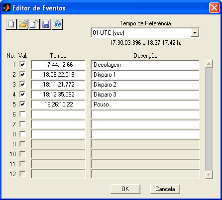
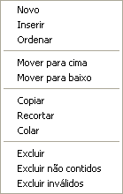
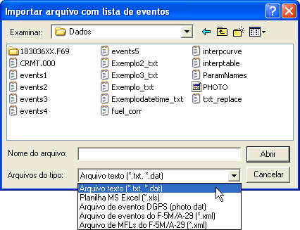
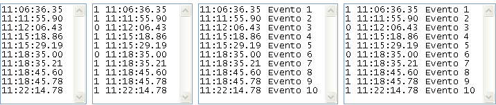
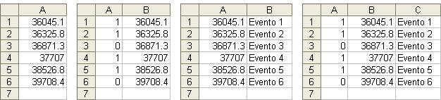
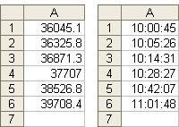
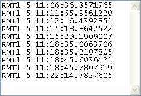
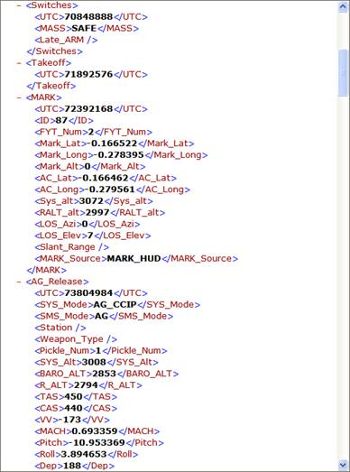
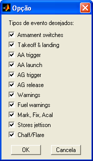
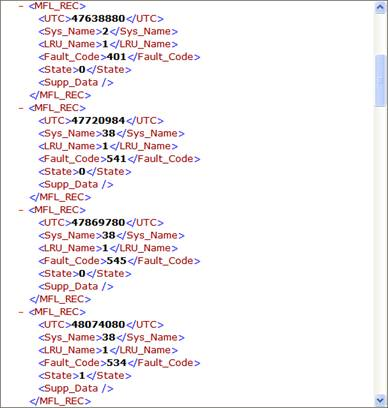

| Menu Ferramentas |
|
Essa ferramenta
permite cadastrar
e gerenciar os eventos do voo.
A exibição dos
eventos no gráfico
principal é realizada pela opção “Marcadores
de eventos” no menu
“Exibir” ou pelo botão  na
Barra de Ferramentas.
na
Barra de Ferramentas.
A obtenção dos
dados dos eventos é
realizada pela opção “Obter
dados dos eventos” no menu
“Ferramentas ► Gerenciamento
de eventos ...” ou pelo botão  na
Barra de Ferramentas.
na
Barra de Ferramentas.
Para iniciar a
ferramenta, clique
em “Ferramentas ► Gerenciamento de eventos
... ► Editor de eventos”
ou no botão na
Barra de Ferramentas.

Descrição
e Operação
Os eventos de
um voo são cadastrados individualmente e
organizados numericamente em uma lista, que pode ser salva e carregada
pelo
usuário.
Cada evento é
definido por um instante de tempo referenciado
de acordo com um parâmetro de tempo escolhido pelo usuário.
A critério do usuário, os
eventos podem ser
omitidos no gráfico e na obtenção de dados marcando-os como “inválidos”
no
editor.
A janela do
Editor de Eventos
apresenta as seguintes seções:
Barra
de Ferramentas
Permite criar,
salvar, carregar as
listas de eventos em arquivos .mat
e importar de outros formatos.
Para criar uma nova
lista, clique no botão  e
confirme. A lista anterior será descartada e
uma lista com 12 eventos em branco será apresentada.
e
confirme. A lista anterior será descartada e
uma lista com 12 eventos em branco será apresentada.
Para carregar uma
lista salva, clique no botão  ,
localize o arquivo .mat e
clique “Abrir”. A lista anterior será descartada e a lista indicada
será
carregada.
,
localize o arquivo .mat e
clique “Abrir”. A lista anterior será descartada e a lista indicada
será
carregada.
Para importar uma
lista a partir de outro formato de arquivo, clique no
botão  ,
indique o tipo, localize o arquivo e clique “Abrir”. Os tipos de
arquivo e as
formatações suportadas são apresentados na seção “Importação
de Arquivos”.
,
indique o tipo, localize o arquivo e clique “Abrir”. Os tipos de
arquivo e as
formatações suportadas são apresentados na seção “Importação
de Arquivos”.
Para salvar a lista
atual, clique no botão  ,
indique ou localize um arquivo .mat
e clique “Salvar”.
,
indique ou localize um arquivo .mat
e clique “Salvar”.
Seletor
de Tempo de Referência
Para a correta referenciação dos
eventos no tempo, é necessário indicar um parâmetro como tempo de
referência.
Esse parâmetro deve representar um tempo corrido em segundos e ser
adequado, ou
seja, monotônico crescente e sem pontos inválidos (“NaN”).
Indique o
parâmetro desejado no campo “Tempo de Referência”.
O R_DAT irá analisar se
o parâmetro é adequado e
informará a cobertura de tempo do parâmetro (primeira à última
observação) logo
abaixo do campo.
|
Nota: O Tempo de
Referência é único para o arquivo de trabalho e deve ser o mesmo usado
para referenciar os pontos de ensaio cadastrados. |
Lista
de Eventos
Essa seção
apresenta a lista de eventos cadastrados e a
barra de rolagem vertical.
Não há limite
para o número de eventos cadastrados, mas a
lista só apresenta 12 eventos de cada vez. Use a barra de rolagem para
deslocar
a lista para cima e para baixo.
Caso haja menos
de 12 eventos cadastrados, o restante da
lista ficará inativo. Use o menu
de controle para
alterar o tamanho da lista de eventos.
A lista
apresenta as seguintes colunas:
|
Coluna |
Descrição |
|
Número |
Ordem em que o
evento aparece na lista (número do evento). |
|
Validade |
Validade do
evento (habilita a apresentação no gráfico principal). |
|
Tempo |
Instante em que
o evento ocorreu no tempo de referência. |
|
Descrição |
Descrição
sucinta do evento (texto alfanumérico sem limite de tamanho). |
Definição de
Eventos
Para definir um
evento, insira diretamente os dados desejados
em uma linha vazia da lista:
- Localize o número
da linha correspondente ao número do evento desejado;
- Insira o tempo do
evento no campo “Tempo”, em qualquer formato
de
tempo reconhecido
pelo R_DAT. O tempo será convertido automaticamente para o
formato HH:MM:SS.MS;
- Insira a descrição
do evento diretamente no campo “Descrição”. Não há limite de tamanho
para a
descrição;
- Atribua a validade do evento marcando o
campo “Val.”.
Para alterar um
evento, altere diretamente os dados na linha
do evento desejado.
Menu de Controle de
Eventos
O controle da
lista de eventos é realizado através de um menu
que aparece ao se clicar com o botão direito do mouse
sobre uma das linhas da lista:

As seguintes
operações são disponíveis:
|
Operação |
Descrição |
|
Novo |
Cria uma linha
em branco após o último evento cadastrado. |
|
Inserir |
Insere uma
linha em branco abaixo da linha em que o cursor do mouse está. Os
demais eventos são deslocados uma linha para baixo. |
|
Ordenar |
Ordena todos os
eventos cronologicamente. Tempos não definidos (em branco) são
posicionados no fim da lista. |
|
Mover para cima |
Move para cima
o evento da linha em que o cursor do mouse está. O evento de cima é
deslocado uma linha para baixo. |
|
Mover para baixo |
Move para baixo
o evento da linha em que o cursor do mouse está. O evento de baixo é
deslocado uma linha para cima. |
|
Copiar |
Copia para a
memória o evento da linha em que o cursor do mouse está. |
|
Recortar |
Copia para a
memória o evento da linha em que o cursor do mouse está e deixa a linha
em branco. |
|
Colar |
Atribui para a
linha em que o cursor do mouse está o evento armazenado na memória
(copiado/recortado). |
|
Excluir |
Remove a linha
em que o cursor do mouse está e desloca todos os demais eventos para
cima. |
|
Excluir não
contidos |
Remove todas as
linhas cujo tempo esteja fora do intervalo de tempo definido. |
|
Excluir
inválidos |
Remove todas as
linhas não marcadas como válidas. |
|
Nota: É necessário
confirmar através de caixas de diálogo as alterações na lista de
eventos, pois não é possível desfazer as alterações indevidas.
Certifique-se de que a operação está correta antes de confirmá-la. |
Importação
de Arquivos
A ferramenta
pode importar listas de eventos a partir de
outros formatos de arquivo, inclusive de padrões gerados por outros
programas
de uso comum.
Ao importar um
arquivo, caso já haja eventos cadastrados o
usuário poderá informar se deseja substituir ou acrescentar os eventos
importados à lista atual.
Para importar
uma lista a partir de outro formato, clique no
botão  ,
selecione o tipo de arquivo no campo “Arquivos do tipo”, localize o
arquivo
desejado e clique “Abrir”.
,
selecione o tipo de arquivo no campo “Arquivos do tipo”, localize o
arquivo
desejado e clique “Abrir”.

As opções de
tipos de arquivo para importação são:
|
Tipo de Arquivo |
Descrição |
|
Arquivo texto (.txt,
.dat) |
Arquivo de
texto ASCII contendo uma tabela de eventos delimitada. |
|
Planilha MS
Excel (.xls) |
Planilha Excel
contendo uma tabela de eventos. |
|
Arquivos de
eventos DGPS (photo.dat) |
Arquivo gerado
pelo receptor DGPS contendo uma tabela com os eventos gerados por sinal
elétrico (topímetro). |
|
Arquivos de
eventos do F-5M/A-29 (.xml) |
Arquivo de
eventos do sistema aviônico
das aeronaves F-5M e A-29. |
|
Arquivos de MFLs
do F-5M/A-29 (.xml) |
Arquivo de
registro de panes do sistema aviônico
das aeronaves F-5M e A-29. |
A formatação
dos arquivos deve ser a seguinte:
Arquivos de
Texto
Texto
delimitado por espaço, vírgula, tabulação ou ponto e
vírgula, contendo as seguintes colunas:
- Validade: 0 ou 1 (opcional);
- Tempo em qualquer
formato
reconhecido pelo R_DAT;
- Descrição
(opcional).
- Não deve haver
cabeçalho.
Exemplos:
|
Tempo |
Validade e Tempo |
Tempo e
Descrição |
Validade, Tempo
e Descrição |

Se houver
ambiguidade no conteúdo das colunas, o R_DAT irá
questionar o usuário para esclarecimento.
Planilhas Excel
Planinha
contendo as seguintes colunas:
- Validade: 0 ou 1 (opcional);
- Tempo em segundos ou qualquer formato data/hora do Excel (como hh:mm:ss);
- Descrição
(opcional).
- Apenas a primeira
planilha é importada. As demais serão ignoradas.
Exemplos:
|
Tempo |
Validade e Tempo |
Tempo e
Descrição |
Validade, Tempo
e Descrição |

|
Tempo em segundos |
Tempo em hh:mm:ss |

O R_DAT irá questionar o usuário sobre o formato do parâmetro de tempo.
Arquivos de
Eventos
DGPS
Texto
delimitado por espaço, contendo as seguintes colunas:
- Código do receptor
(descartado);
- Dia da semana GPS;
- Tempo do evento.
Exemplos:

O R_DAT irá
questionar o usuário sobre a inclusão do tempo
referente aos dias da semana GPS.
Arquivos de
Eventos do
F-5M/A-29
Arquivo XML
contendo chaves com informações dos eventos
ocorridos durante o voo:

O R_DAT irá
questionar quais tipos de evento deseja
importar. Os tipos não marcados serão ignorados.

As informações
listadas abaixo serão incorporadas à
descrição do evento. As demais informações serão ignoradas.
|
Evento |
Informações |
Exemplo |
|
Armament
switches |
Switch
Type, Position |
Switches
(MASS: SIM) |
|
Takeoff |
- |
Takeoff |
|
Touch
& Go |
- |
Touch and Go |
|
Landing |
- |
Landing |
|
AA
trigger |
SYS
Mode, Trigger Num, Quantity |
AA Trigger
Press (Mode: LCOS, Burst: 1, Quantity: 280) |
|
AA
launch |
SYS
Mode, Station, Weapon Type |
AA Pickle
(Mode: INT S,
Station: 1, Weapon:
MAA1) |
|
AG
trigger |
Trigger Num, Quantity |
AG Trigger Press (Burst: 2, Quantity: 210) |
|
AG
release |
SYS
Mode, Station, Weapon Type |
AG Release
(Mode: AG CCIP, Station: 3, Weapon: FG230) |
|
Warnings |
ID,
Warn Limit |
WARN
(ID: BARO LOW, Warn Limit:
860) |
|
Warnings
(X break) |
- |
AA X-Break |
|
Fuel
warnings |
ID,
Warn Limit |
Fuel Warn
(ID: JOKER1, Warn Limit:
2100) |
|
Fuel
warnings (FRCS) |
HP Num, Route Num, FRCS Value |
FRCS (HP:
0, Route: 1, FRCS Value: 800) |
|
Mark |
ID,
FYT Num, MARK Source |
MARK
(ID: 87, FYT: 2, MARK Source: MARK HUD) |
|
Fix |
FYT
Num, FIX Source |
FIX
(FYT: 0, FIX Source: FIX OVFLY) |
|
Acal |
FYT Num, ACAL
Source |
ACAL (FYT:
0, ACAL Source:
ACAL OVFLY) |
|
Stores
jettison |
ID,
Station |
Jetisson
(ID: EJ, Station: 4) |
|
Chaff/Flare |
- |
CH/FL |
Para mais
informações, consultar a
ordem técnica de aviônicos
da aeronave F-5M (T.O.
1F-5EM-1-1).
Arquivos de MFLs do F-5M/A-29
Arquivo XML
contendo chaves com informações de panes ocorridas
durante o voo:

As informações
listadas abaixo serão incorporadas à
descrição da pane. As demais informações serão ignoradas.
|
Informações |
Exemplo |
|
Sys Name,
LRU Name, Fault Code, State |
MFL
(System: 2, LRU: 1, Fault_Code: 401, State: 0) |
Para mais
informações, consultar
as ordens técnicas de manutenção da aeronave F-5M.
Sair
Para confirmar
as alterações na
lista de eventos e voltar à tela principal do R_DAT, clique no botão
“OK” e
confirme. A lista de
eventos atual será atualizada, permitindo realizar as operações que
fazem uso
da mesma. Ao salvar as matrizes de trabalho, a lista de eventos será
incluída
no arquivo.
Para descartar
as alterações e
voltar à tela principal do R_DAT, clique no botão “Cancela” e confirme.
| |
Gerenciamento de eventos |
Definir pontos
selecionados como eventos |
|